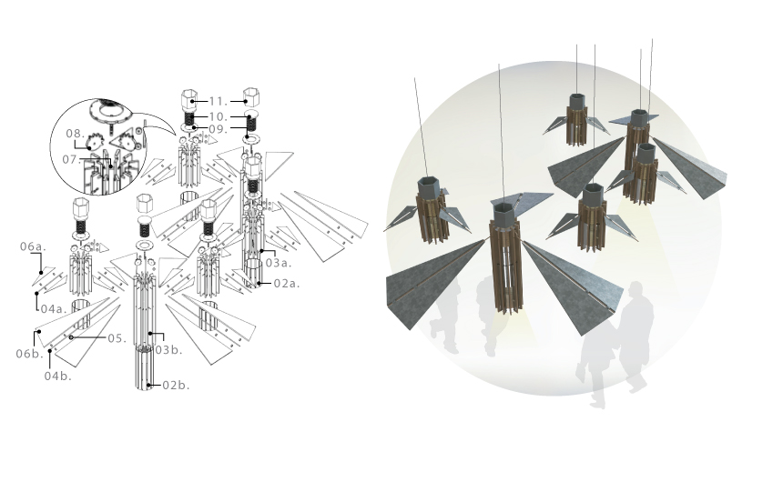
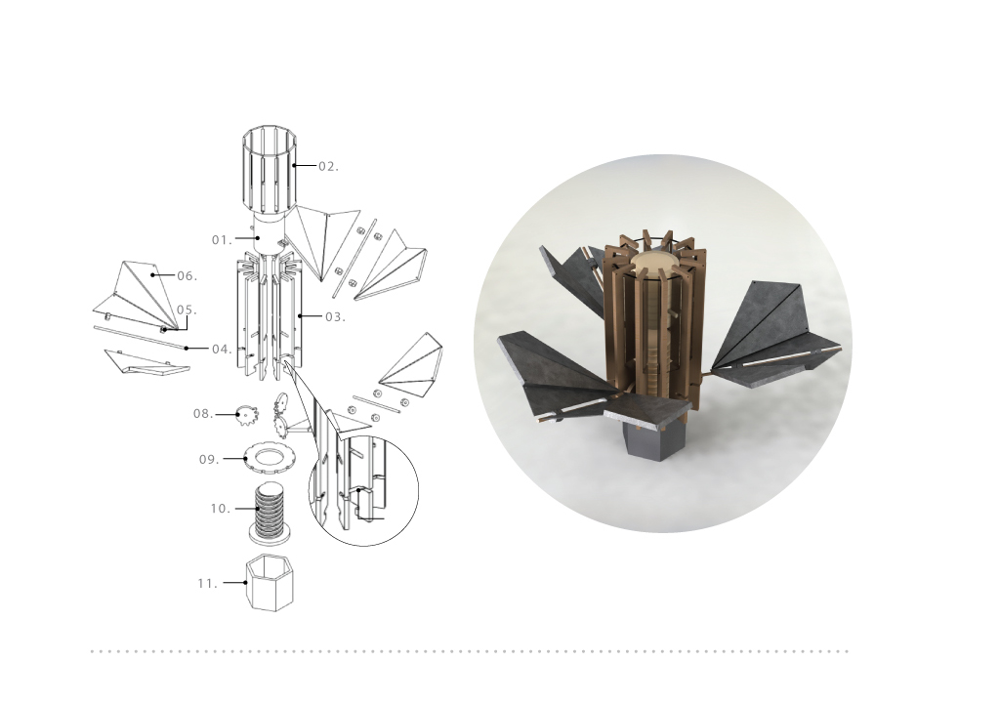

Illuminaut Kinetic Sculpture Lamp
The Illuminaut lamp allows office space to inspire and relax with its simple construction. Placed in break or rest areas, it encourages ideation and thought process to overall enhance office/studio life. A variable wing shape allows it to not only be around foliage but also used as a hanging fixture or stand alone structure.
Illuminaut is designed to encourage thought and ideas throughout the day.
In any studio or office setting there are bound to be individuals needing a break. The simple mechanisms of the lamp allow and experience that relax and let the mind wonder slowly to regain focus.
My Role:
Brainstorming initial ideas and iterations, Creating persona users, User research, 3D modeling, Prototyping and building
Tools: Pen and paper, Solidworks, Adobe Phototshop, Adobe Illustrator
Not only is it simple in its mechanics, it also mimics natural plant life by opening and closing it's wings
My group and I wanted to answer a question that engages objects around the office. Specifically, we asked "What can this lamp do besides light up the room for office/studio workers". Illuminaut's answer was to allow for thoughts to flow thus encouraging creativity through simplicity. Through prototyping and user feedback what we discovered was that nothing was better than something simple or like a small gadget to look at or fiddle around to get thoughts flowing.
The wings mimic how plants shrink or close their petals when there isn't enough light. Illuminaut's wings fold in and out depending on the time of day and act as light dampeners all in one to simulate the time of day to compliment natural light.
The target users are studio or office workers. Users who are taking short or longer breaks and need something else to view as a change of pace.